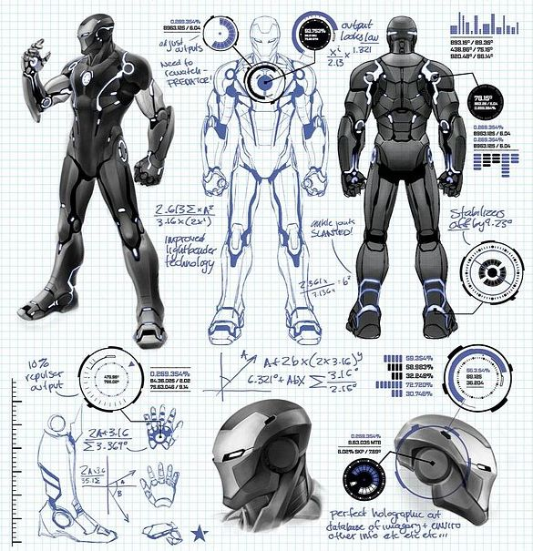
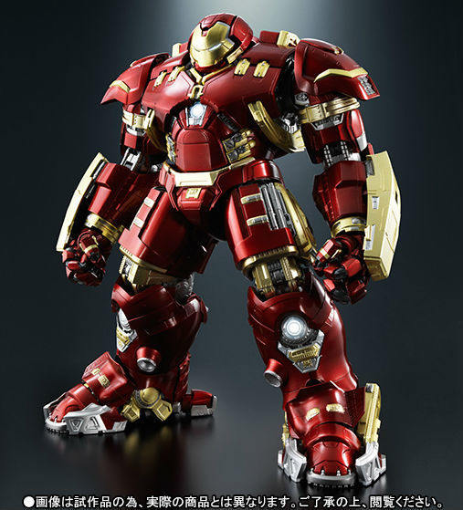
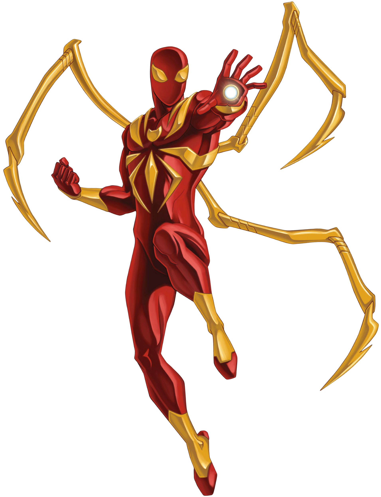
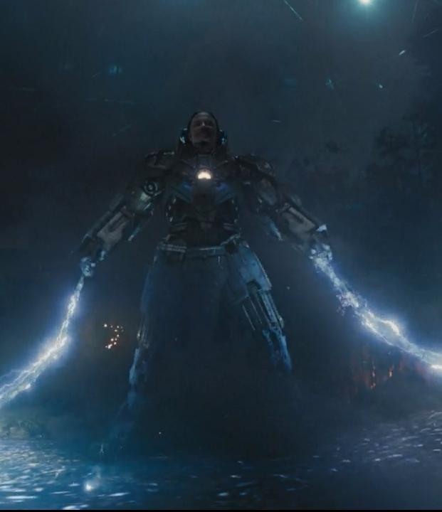
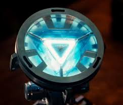

Avengers
About
Services
Contacts
Mark 42

Mark 42
The Mark 42 (XLII), also known as the Autonomous Prehensile Propulsion Suit was the forty second armor, as well as one of the many
newly built
Suit deatils
*Prehensility
The Mark 42 has prehensile technology, allowing it to attach to Tony when controlled by his nervous system.
*Flight
The repulsors on its leg are stronger allowing it to travel into space.
*Weaponary
The suit has a standard set of pre-release systems, including amplified multi-stage repulsor systems. It has compact missile systems, much like the Mark VII, and it also has more conventional rocket systems.uits, created by Tony Stark sometime after the events of The Avengers
*Armor Separation Upgrade Edit
The Mark 42 is capable of separating into smaller Armor Plates if Tony Stark uses remote command through the Subcutaneous Chip implanted in his forearms or if it is commanded by friendly Artificial Intelligence. The Mark XLII's armor separation derivative is highly enhanced to be intelligently controlled, reach the user on the longest distance possible or hit a target in more powerful, swift and accurate manners. This tactile function was derived from Mark 41.
Related Projects



